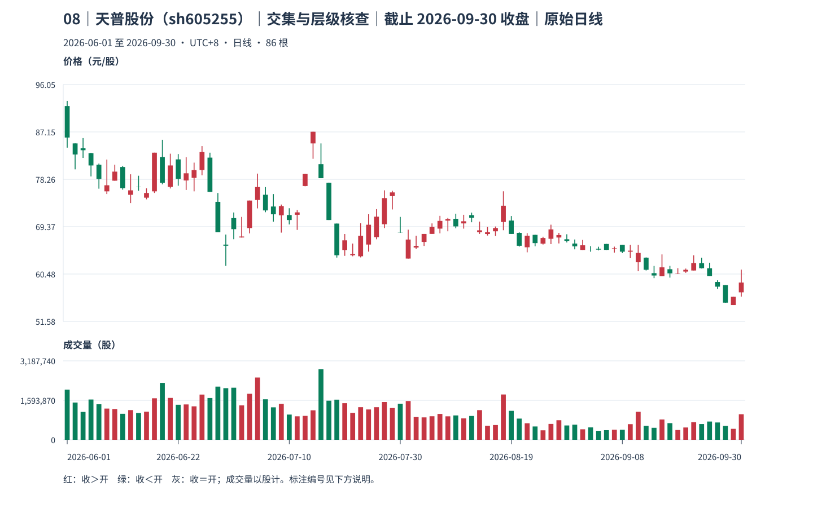
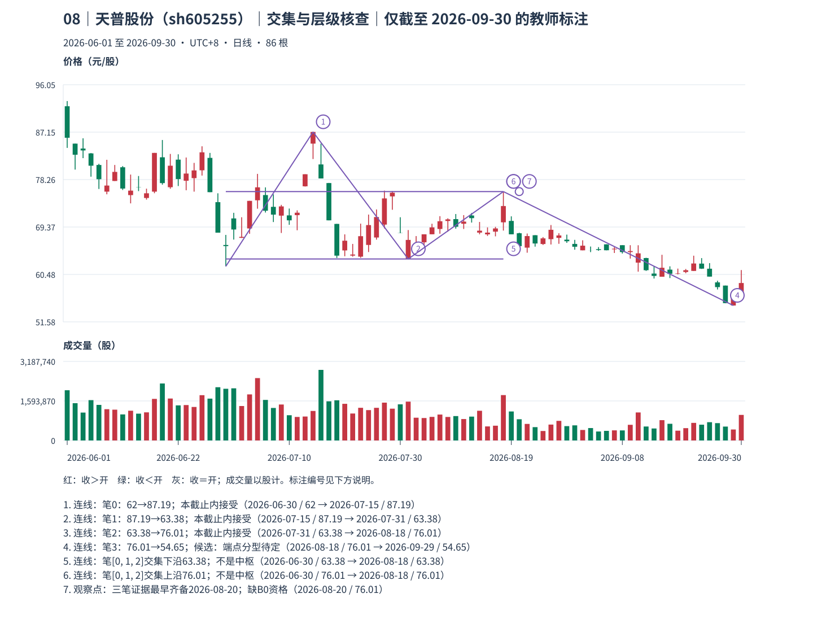
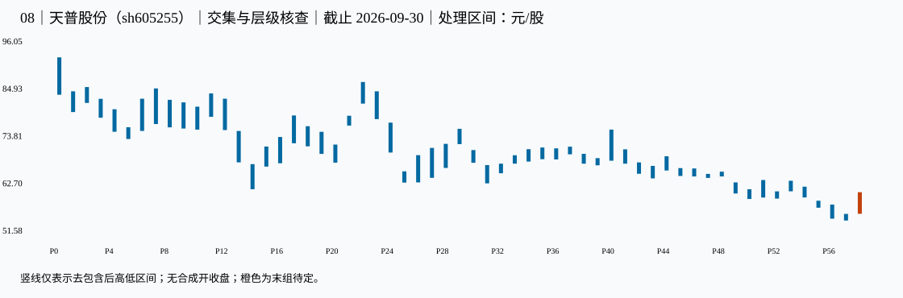

08｜天普股份（sh605255）｜交集与层级核查｜本包讲解
教师讲解仅截止 2026-09-30；先保留同编号原答，逐小段核对、确认理解后再继续。
真实未复权日线；价格单位元/股（CNY/share），成交量单位股（shares），横轴按实际交易日顺序。窗口避开已知价格基准变化，其他公司行为及现金分红日历仍未穷尽核准；价格差不单独证明技术破位、经济损失或投资总回报。样本按教学需要事后选取，不用于估计模式频率。
声明起点 2026-06-01，首对 raw 0=[84.200,92.980]、raw 1（2026-06-02）=[80.130,85.000]，互不包含，高低共同向下。只按本窗口启动，未补造更早热身资料，也未绑定此前已确认段；左边界限制仍保留，首个笔端点不能自动作为真实段起点。
这一例实际算出了什么
选连续三笔：笔 0[62,87.19]，2026-06-30→2026-07-15；笔 1[63.38,87.19]，2026-07-15→2026-07-31；笔 2[63.38,76.01]，2026-07-31→2026-08-18。它们是笔，尚无 B0 线段资格。
max(各低)=63.38，min(各高)=76.01，交集 [63.38,76.01]，宽 12.63 元/股>0；外围范围 [62,87.19]。外围范围与共同交集不能混用。
三笔 known_at 分别为 笔 0=2026-07-17，状态 accepted_at_cutoff；笔 1=2026-08-05，状态 accepted_at_cutoff；笔 2=2026-08-20，状态 accepted_at_cutoff。这些日期只说明笔所用分型的证据时间，不能充作中枢确认时间。
M12 最低教学中枢要求三个连续已完成 B0 正宽相交；本例缺前段左边界、标准特征及段完成证据，qualified_segment=False、qualified_center=False。故这里只有三笔交集，没有 L1 中枢的 known_at；没有合格 L1 与 C12-F 封口，也不能递归生成 L2。日线只是取样周期。
known_at 是本窗口、给定口径下边界证据齐备之日，空值表示尚待；confirmed_at_cutoff＝本截止内分型满足；provisional_right_group＝右组尚可吸收；provisional_fractal＝笔端点仍待；latest_endpoint_revisable＝末端仍可修订；accepted_at_cutoff＝本次接受。所有状态均非永久确认。
对照原图、标注和处理区间



展开本截止的逐根映射、分型、笔、拒绝与修订证据
1 原始 K 线 → 处理区间
| 原始号 | 日期 | 开 | 高 | 低 | 收 | 映射到 |
|---|---|---|---|---|---|---|
| 0 | 2026-06-01 | 92.010 | 92.980 | 84.200 | 86.100 | P0 |
| 1 | 2026-06-02 | 85.000 | 85.000 | 80.130 | 82.920 | P1 |
| 2 | 2026-06-03 | 84.080 | 86.000 | 82.280 | 83.720 | P2 |
| 3 | 2026-06-04 | 83.170 | 83.240 | 78.800 | 80.860 | P3 |
| 4 | 2026-06-05 | 81.000 | 81.220 | 76.500 | 78.330 | P4 |
| 5 | 2026-06-08 | 76.000 | 81.970 | 75.500 | 77.140 | P4 |
| 6 | 2026-06-09 | 78.000 | 81.000 | 78.000 | 79.700 | P4 |
| 7 | 2026-06-10 | 80.570 | 80.790 | 76.310 | 76.580 | P4 |
| 8 | 2026-06-11 | 75.350 | 79.200 | 73.800 | 76.190 | P5 |
| 9 | 2026-06-12 | 76.830 | 78.930 | 76.100 | 76.790 | P5 |
| 10 | 2026-06-15 | 74.810 | 76.560 | 74.500 | 75.690 | P5 |
| 11 | 2026-06-16 | 76.000 | 83.260 | 75.700 | 83.260 | P6 |
| 12 | 2026-06-17 | 82.440 | 85.680 | 77.310 | 77.600 | P7 |
| 13 | 2026-06-18 | 76.830 | 83.070 | 76.540 | 80.860 | P8 |
| 14 | 2026-06-22 | 82.000 | 83.000 | 77.050 | 78.360 | P8 |
| 15 | 2026-06-23 | 78.040 | 82.400 | 76.260 | 79.390 | P9 |
| 16 | 2026-06-24 | 78.530 | 81.390 | 76.000 | 79.980 | P10 |
| 17 | 2026-06-25 | 80.000 | 84.500 | 79.010 | 83.370 | P11 |
| 18 | 2026-06-26 | 82.330 | 83.260 | 75.900 | 75.900 | P12 |
| 19 | 2026-06-29 | 74.030 | 75.690 | 68.310 | 68.310 | P13 |
| 20 | 2026-06-30 | 66.000 | 67.890 | 62.000 | 65.790 | P14 |
| 21 | 2026-07-01 | 70.980 | 72.030 | 67.010 | 68.900 | P15 |
| 22 | 2026-07-02 | 67.340 | 71.200 | 67.320 | 67.520 | P15 |
| 23 | 2026-07-03 | 69.100 | 74.270 | 68.100 | 74.270 | P16 |
| 24 | 2026-07-06 | 74.380 | 79.330 | 72.800 | 76.810 | P17 |
| 25 | 2026-07-07 | 75.360 | 76.800 | 72.080 | 72.420 | P18 |
| 26 | 2026-07-08 | 73.150 | 75.490 | 70.300 | 71.690 | P19 |
| 27 | 2026-07-09 | 71.500 | 73.520 | 68.250 | 73.230 | P20 |
| 28 | 2026-07-10 | 71.550 | 72.830 | 69.780 | 70.620 | P20 |
| 29 | 2026-07-13 | 71.600 | 72.490 | 68.760 | 72.050 | P20 |
| 30 | 2026-07-14 | 77.000 | 79.260 | 76.950 | 79.260 | P21 |
| 31 | 2026-07-15 | 85.000 | 87.190 | 82.110 | 87.190 | P22 |
| 32 | 2026-07-16 | 81.100 | 85.000 | 78.470 | 78.470 | P23 |
| 33 | 2026-07-17 | 77.610 | 77.640 | 70.620 | 70.620 | P24 |
| 34 | 2026-07-20 | 69.950 | 69.950 | 63.560 | 64.000 | P25 |
| 35 | 2026-07-21 | 64.980 | 67.990 | 63.890 | 66.800 | P25 |
| 36 | 2026-07-22 | 64.010 | 66.200 | 63.810 | 64.210 | P25 |
| 37 | 2026-07-23 | 63.810 | 70.000 | 63.600 | 67.650 | P26 |
| 38 | 2026-07-24 | 66.010 | 71.700 | 64.680 | 69.730 | P27 |
| 39 | 2026-07-27 | 67.400 | 72.660 | 67.000 | 71.240 | P28 |
| 40 | 2026-07-28 | 69.820 | 76.190 | 69.100 | 74.730 | P29 |
| 41 | 2026-07-29 | 75.110 | 76.100 | 72.600 | 75.800 | P29 |
| 42 | 2026-07-30 | 68.250 | 71.200 | 68.220 | 68.220 | P30 |
| 43 | 2026-07-31 | 63.380 | 68.800 | 63.380 | 66.950 | P31 |
| 44 | 2026-08-03 | 65.450 | 67.670 | 65.160 | 65.760 | P31 |
| 45 | 2026-08-04 | 66.500 | 68.000 | 65.750 | 68.000 | P32 |
| 46 | 2026-08-05 | 68.010 | 69.980 | 68.010 | 69.300 | P33 |
| 47 | 2026-08-06 | 69.000 | 71.400 | 68.110 | 70.450 | P34 |
| 48 | 2026-08-07 | 70.500 | 71.000 | 68.500 | 70.800 | P34 |
| 49 | 2026-08-10 | 70.850 | 71.800 | 69.060 | 69.420 | P35 |
| 50 | 2026-08-11 | 69.980 | 71.600 | 69.000 | 70.380 | P36 |
| 51 | 2026-08-12 | 71.530 | 72.000 | 70.200 | 71.030 | P37 |
| 52 | 2026-08-13 | 68.320 | 70.320 | 68.000 | 68.680 | P38 |
| 53 | 2026-08-14 | 67.990 | 69.300 | 67.700 | 68.320 | P39 |
| 54 | 2026-08-17 | 68.500 | 69.400 | 67.620 | 69.100 | P39 |
| 55 | 2026-08-18 | 70.250 | 76.010 | 68.700 | 73.300 | P40 |
| 56 | 2026-08-19 | 70.510 | 71.370 | 68.000 | 68.000 | P41 |
| 57 | 2026-08-20 | 68.200 | 68.300 | 65.630 | 65.780 | P42 |
| 58 | 2026-08-21 | 65.500 | 68.150 | 64.550 | 67.670 | P43 |
| 59 | 2026-08-24 | 67.830 | 67.840 | 65.690 | 66.280 | P43 |
| 60 | 2026-08-25 | 66.180 | 67.480 | 66.010 | 67.240 | P43 |
| 61 | 2026-08-26 | 67.090 | 69.740 | 66.090 | 68.850 | P44 |
| 62 | 2026-08-27 | 67.330 | 68.200 | 66.220 | 67.790 | P44 |
| 63 | 2026-08-28 | 67.000 | 67.940 | 66.400 | 66.700 | P44 |
| 64 | 2026-08-31 | 66.200 | 66.960 | 65.110 | 65.670 | P45 |
| 65 | 2026-09-01 | 65.000 | 66.880 | 65.000 | 65.870 | P46 |
| 66 | 2026-09-02 | 65.010 | 65.710 | 64.660 | 65.000 | P47 |
| 67 | 2026-09-03 | 65.220 | 65.600 | 64.910 | 65.060 | P47 |
| 68 | 2026-09-04 | 66.120 | 66.120 | 65.000 | 65.010 | P48 |
| 69 | 2026-09-07 | 65.180 | 65.620 | 64.500 | 65.300 | P49 |
| 70 | 2026-09-08 | 65.960 | 65.960 | 64.400 | 64.670 | P49 |
| 71 | 2026-09-09 | 64.670 | 65.960 | 63.450 | 64.860 | P49 |
| 72 | 2026-09-10 | 62.690 | 65.950 | 61.000 | 64.430 | P49 |
| 73 | 2026-09-11 | 63.550 | 63.600 | 61.140 | 61.270 | P49 |
| 74 | 2026-09-14 | 60.640 | 61.990 | 59.710 | 60.200 | P50 |
| 75 | 2026-09-15 | 60.050 | 64.160 | 60.050 | 61.730 | P51 |
| 76 | 2026-09-16 | 61.380 | 62.000 | 59.800 | 60.600 | P52 |
| 77 | 2026-09-17 | 60.600 | 61.570 | 60.490 | 60.670 | P52 |
| 78 | 2026-09-18 | 60.940 | 61.500 | 60.700 | 61.270 | P52 |
| 79 | 2026-09-21 | 61.140 | 63.990 | 61.130 | 62.530 | P53 |
| 80 | 2026-09-22 | 62.510 | 63.540 | 61.510 | 61.560 | P53 |
| 81 | 2026-09-23 | 61.550 | 62.600 | 60.070 | 60.070 | P54 |
| 82 | 2026-09-24 | 58.990 | 59.300 | 57.660 | 58.100 | P55 |
| 83 | 2026-09-28 | 58.390 | 58.390 | 55.090 | 55.100 | P56 |
| 84 | 2026-09-29 | 54.650 | 56.200 | 54.650 | 56.200 | P57 |
| 85 | 2026-09-30 | 57.040 | 61.300 | 56.230 | 58.870 | P58 |
| 处理号 | 原始号 | 日期范围 | [低,高] | 低点实际日 | 高点实际日 | 合并方向 | 形成/末次修改 | 右边界已知日 |
|---|---|---|---|---|---|---|---|---|
| P0 | [0] | 2026-06-01—2026-06-01 | [84.2,92.98] | 2026-06-01 | 2026-06-01 | 无合并 | 2026-06-01 | 2026-06-02 |
| P1 | [1] | 2026-06-02—2026-06-02 | [80.13,85] | 2026-06-02 | 2026-06-02 | 无合并 | 2026-06-02 | 2026-06-03 |
| P2 | [2] | 2026-06-03—2026-06-03 | [82.28,86] | 2026-06-03 | 2026-06-03 | 无合并 | 2026-06-03 | 2026-06-04 |
| P3 | [3] | 2026-06-04—2026-06-04 | [78.8,83.24] | 2026-06-04 | 2026-06-04 | 无合并 | 2026-06-04 | 2026-06-05 |
| P4 | [4, 5, 6, 7] | 2026-06-05—2026-06-10 | [75.5,80.79] | 2026-06-08 | 2026-06-10 | down | 2026-06-10 | 2026-06-11 |
| P5 | [8, 9, 10] | 2026-06-11—2026-06-15 | [73.8,76.56] | 2026-06-11 | 2026-06-15 | down | 2026-06-15 | 2026-06-16 |
| P6 | [11] | 2026-06-16—2026-06-16 | [75.7,83.26] | 2026-06-16 | 2026-06-16 | 无合并 | 2026-06-16 | 2026-06-17 |
| P7 | [12] | 2026-06-17—2026-06-17 | [77.31,85.68] | 2026-06-17 | 2026-06-17 | 无合并 | 2026-06-17 | 2026-06-18 |
| P8 | [13, 14] | 2026-06-18—2026-06-22 | [76.54,83] | 2026-06-18 | 2026-06-22 | down | 2026-06-22 | 2026-06-23 |
| P9 | [15] | 2026-06-23—2026-06-23 | [76.26,82.4] | 2026-06-23 | 2026-06-23 | 无合并 | 2026-06-23 | 2026-06-24 |
| P10 | [16] | 2026-06-24—2026-06-24 | [76,81.39] | 2026-06-24 | 2026-06-24 | 无合并 | 2026-06-24 | 2026-06-25 |
| P11 | [17] | 2026-06-25—2026-06-25 | [79.01,84.5] | 2026-06-25 | 2026-06-25 | 无合并 | 2026-06-25 | 2026-06-26 |
| P12 | [18] | 2026-06-26—2026-06-26 | [75.9,83.26] | 2026-06-26 | 2026-06-26 | 无合并 | 2026-06-26 | 2026-06-29 |
| P13 | [19] | 2026-06-29—2026-06-29 | [68.31,75.69] | 2026-06-29 | 2026-06-29 | 无合并 | 2026-06-29 | 2026-06-30 |
| P14 | [20] | 2026-06-30—2026-06-30 | [62,67.89] | 2026-06-30 | 2026-06-30 | 无合并 | 2026-06-30 | 2026-07-01 |
| P15 | [21, 22] | 2026-07-01—2026-07-02 | [67.32,72.03] | 2026-07-02 | 2026-07-01 | up | 2026-07-02 | 2026-07-03 |
| P16 | [23] | 2026-07-03—2026-07-03 | [68.1,74.27] | 2026-07-03 | 2026-07-03 | 无合并 | 2026-07-03 | 2026-07-06 |
| P17 | [24] | 2026-07-06—2026-07-06 | [72.8,79.33] | 2026-07-06 | 2026-07-06 | 无合并 | 2026-07-06 | 2026-07-07 |
| P18 | [25] | 2026-07-07—2026-07-07 | [72.08,76.8] | 2026-07-07 | 2026-07-07 | 无合并 | 2026-07-07 | 2026-07-08 |
| P19 | [26] | 2026-07-08—2026-07-08 | [70.3,75.49] | 2026-07-08 | 2026-07-08 | 无合并 | 2026-07-08 | 2026-07-09 |
| P20 | [27, 28, 29] | 2026-07-09—2026-07-13 | [68.25,72.49] | 2026-07-09 | 2026-07-13 | down | 2026-07-13 | 2026-07-14 |
| P21 | [30] | 2026-07-14—2026-07-14 | [76.95,79.26] | 2026-07-14 | 2026-07-14 | 无合并 | 2026-07-14 | 2026-07-15 |
| P22 | [31] | 2026-07-15—2026-07-15 | [82.11,87.19] | 2026-07-15 | 2026-07-15 | 无合并 | 2026-07-15 | 2026-07-16 |
| P23 | [32] | 2026-07-16—2026-07-16 | [78.47,85] | 2026-07-16 | 2026-07-16 | 无合并 | 2026-07-16 | 2026-07-17 |
| P24 | [33] | 2026-07-17—2026-07-17 | [70.62,77.64] | 2026-07-17 | 2026-07-17 | 无合并 | 2026-07-17 | 2026-07-20 |
| P25 | [34, 35, 36] | 2026-07-20—2026-07-22 | [63.56,66.2] | 2026-07-20 | 2026-07-22 | down | 2026-07-22 | 2026-07-23 |
| P26 | [37] | 2026-07-23—2026-07-23 | [63.6,70] | 2026-07-23 | 2026-07-23 | 无合并 | 2026-07-23 | 2026-07-24 |
| P27 | [38] | 2026-07-24—2026-07-24 | [64.68,71.7] | 2026-07-24 | 2026-07-24 | 无合并 | 2026-07-24 | 2026-07-27 |
| P28 | [39] | 2026-07-27—2026-07-27 | [67,72.66] | 2026-07-27 | 2026-07-27 | 无合并 | 2026-07-27 | 2026-07-28 |
| P29 | [40, 41] | 2026-07-28—2026-07-29 | [72.6,76.19] | 2026-07-29 | 2026-07-28 | up | 2026-07-29 | 2026-07-30 |
| P30 | [42] | 2026-07-30—2026-07-30 | [68.22,71.2] | 2026-07-30 | 2026-07-30 | 无合并 | 2026-07-30 | 2026-07-31 |
| P31 | [43, 44] | 2026-07-31—2026-08-03 | [63.38,67.67] | 2026-07-31 | 2026-08-03 | down | 2026-08-03 | 2026-08-04 |
| P32 | [45] | 2026-08-04—2026-08-04 | [65.75,68] | 2026-08-04 | 2026-08-04 | 无合并 | 2026-08-04 | 2026-08-05 |
| P33 | [46] | 2026-08-05—2026-08-05 | [68.01,69.98] | 2026-08-05 | 2026-08-05 | 无合并 | 2026-08-05 | 2026-08-06 |
| P34 | [47, 48] | 2026-08-06—2026-08-07 | [68.5,71.4] | 2026-08-07 | 2026-08-06 | up | 2026-08-07 | 2026-08-10 |
| P35 | [49] | 2026-08-10—2026-08-10 | [69.06,71.8] | 2026-08-10 | 2026-08-10 | 无合并 | 2026-08-10 | 2026-08-11 |
| P36 | [50] | 2026-08-11—2026-08-11 | [69,71.6] | 2026-08-11 | 2026-08-11 | 无合并 | 2026-08-11 | 2026-08-12 |
| P37 | [51] | 2026-08-12—2026-08-12 | [70.2,72] | 2026-08-12 | 2026-08-12 | 无合并 | 2026-08-12 | 2026-08-13 |
| P38 | [52] | 2026-08-13—2026-08-13 | [68,70.32] | 2026-08-13 | 2026-08-13 | 无合并 | 2026-08-13 | 2026-08-14 |
| P39 | [53, 54] | 2026-08-14—2026-08-17 | [67.62,69.3] | 2026-08-17 | 2026-08-14 | down | 2026-08-17 | 2026-08-18 |
| P40 | [55] | 2026-08-18—2026-08-18 | [68.7,76.01] | 2026-08-18 | 2026-08-18 | 无合并 | 2026-08-18 | 2026-08-19 |
| P41 | [56] | 2026-08-19—2026-08-19 | [68,71.37] | 2026-08-19 | 2026-08-19 | 无合并 | 2026-08-19 | 2026-08-20 |
| P42 | [57] | 2026-08-20—2026-08-20 | [65.63,68.3] | 2026-08-20 | 2026-08-20 | 无合并 | 2026-08-20 | 2026-08-21 |
| P43 | [58, 59, 60] | 2026-08-21—2026-08-25 | [64.55,67.48] | 2026-08-21 | 2026-08-25 | down | 2026-08-25 | 2026-08-26 |
| P44 | [61, 62, 63] | 2026-08-26—2026-08-28 | [66.4,69.74] | 2026-08-28 | 2026-08-26 | up | 2026-08-28 | 2026-08-31 |
| P45 | [64] | 2026-08-31—2026-08-31 | [65.11,66.96] | 2026-08-31 | 2026-08-31 | 无合并 | 2026-08-31 | 2026-09-01 |
| P46 | [65] | 2026-09-01—2026-09-01 | [65,66.88] | 2026-09-01 | 2026-09-01 | 无合并 | 2026-09-01 | 2026-09-02 |
| P47 | [66, 67] | 2026-09-02—2026-09-03 | [64.66,65.6] | 2026-09-02 | 2026-09-03 | down | 2026-09-03 | 2026-09-04 |
| P48 | [68] | 2026-09-04—2026-09-04 | [65,66.12] | 2026-09-04 | 2026-09-04 | 无合并 | 2026-09-04 | 2026-09-07 |
| P49 | [69, 70, 71, 72, 73] | 2026-09-07—2026-09-11 | [61,63.6] | 2026-09-10 | 2026-09-11 | down | 2026-09-11 | 2026-09-14 |
| P50 | [74] | 2026-09-14—2026-09-14 | [59.71,61.99] | 2026-09-14 | 2026-09-14 | 无合并 | 2026-09-14 | 2026-09-15 |
| P51 | [75] | 2026-09-15—2026-09-15 | [60.05,64.16] | 2026-09-15 | 2026-09-15 | 无合并 | 2026-09-15 | 2026-09-16 |
| P52 | [76, 77, 78] | 2026-09-16—2026-09-18 | [59.8,61.5] | 2026-09-16 | 2026-09-18 | down | 2026-09-18 | 2026-09-21 |
| P53 | [79, 80] | 2026-09-21—2026-09-22 | [61.51,63.99] | 2026-09-22 | 2026-09-21 | up | 2026-09-22 | 2026-09-23 |
| P54 | [81] | 2026-09-23—2026-09-23 | [60.07,62.6] | 2026-09-23 | 2026-09-23 | 无合并 | 2026-09-23 | 2026-09-24 |
| P55 | [82] | 2026-09-24—2026-09-24 | [57.66,59.3] | 2026-09-24 | 2026-09-24 | 无合并 | 2026-09-24 | 2026-09-28 |
| P56 | [83] | 2026-09-28—2026-09-28 | [55.09,58.39] | 2026-09-28 | 2026-09-28 | 无合并 | 2026-09-28 | 2026-09-29 |
| P57 | [84] | 2026-09-29—2026-09-29 | [54.65,56.2] | 2026-09-29 | 2026-09-29 | 无合并 | 2026-09-29 | 2026-09-30 |
| P58 | [85] | 2026-09-30—2026-09-30 | [56.23,61.3] | 2026-09-30 | 2026-09-30 | 无合并 | 2026-09-30 | 末组仍可吸收 |
2 分型：发生与知道分列
| 顶/底 | 中心/三组 | 极值日/价 | 三组最早形成日 | 右组末次吸收 | 边界已知日 | 截止状态 |
|---|---|---|---|---|---|---|
| bottom | P1: [0, 1, 2] | 2026-06-02: 80.13 | 2026-06-03 | 2026-06-03 | 2026-06-04 | confirmed_at_cutoff |
| top | P2: [1, 2, 3] | 2026-06-03: 86 | 2026-06-04 | 2026-06-04 | 2026-06-05 | confirmed_at_cutoff |
| bottom | P5: [4, 5, 6] | 2026-06-11: 73.8 | 2026-06-16 | 2026-06-16 | 2026-06-17 | confirmed_at_cutoff |
| top | P7: [6, 7, 8] | 2026-06-17: 85.68 | 2026-06-18 | 2026-06-22 | 2026-06-23 | confirmed_at_cutoff |
| bottom | P10: [9, 10, 11] | 2026-06-24: 76 | 2026-06-25 | 2026-06-25 | 2026-06-26 | confirmed_at_cutoff |
| top | P11: [10, 11, 12] | 2026-06-25: 84.5 | 2026-06-26 | 2026-06-26 | 2026-06-29 | confirmed_at_cutoff |
| bottom | P14: [13, 14, 15] | 2026-06-30: 62 | 2026-07-01 | 2026-07-02 | 2026-07-03 | confirmed_at_cutoff |
| top | P17: [16, 17, 18] | 2026-07-06: 79.33 | 2026-07-07 | 2026-07-07 | 2026-07-08 | confirmed_at_cutoff |
| bottom | P20: [19, 20, 21] | 2026-07-09: 68.25 | 2026-07-14 | 2026-07-14 | 2026-07-15 | confirmed_at_cutoff |
| top | P22: [21, 22, 23] | 2026-07-15: 87.19 | 2026-07-16 | 2026-07-16 | 2026-07-17 | confirmed_at_cutoff |
| bottom | P25: [24, 25, 26] | 2026-07-20: 63.56 | 2026-07-23 | 2026-07-23 | 2026-07-24 | confirmed_at_cutoff |
| top | P29: [28, 29, 30] | 2026-07-28: 76.19 | 2026-07-30 | 2026-07-30 | 2026-07-31 | confirmed_at_cutoff |
| bottom | P31: [30, 31, 32] | 2026-07-31: 63.38 | 2026-08-04 | 2026-08-04 | 2026-08-05 | confirmed_at_cutoff |
| top | P35: [34, 35, 36] | 2026-08-10: 71.8 | 2026-08-11 | 2026-08-11 | 2026-08-12 | confirmed_at_cutoff |
| bottom | P36: [35, 36, 37] | 2026-08-11: 69 | 2026-08-12 | 2026-08-12 | 2026-08-13 | confirmed_at_cutoff |
| top | P37: [36, 37, 38] | 2026-08-12: 72 | 2026-08-13 | 2026-08-13 | 2026-08-14 | confirmed_at_cutoff |
| bottom | P39: [38, 39, 40] | 2026-08-17: 67.62 | 2026-08-18 | 2026-08-18 | 2026-08-19 | confirmed_at_cutoff |
| top | P40: [39, 40, 41] | 2026-08-18: 76.01 | 2026-08-19 | 2026-08-19 | 2026-08-20 | confirmed_at_cutoff |
| bottom | P43: [42, 43, 44] | 2026-08-21: 64.55 | 2026-08-26 | 2026-08-28 | 2026-08-31 | confirmed_at_cutoff |
| top | P44: [43, 44, 45] | 2026-08-26: 69.74 | 2026-08-31 | 2026-08-31 | 2026-09-01 | confirmed_at_cutoff |
| bottom | P47: [46, 47, 48] | 2026-09-02: 64.66 | 2026-09-04 | 2026-09-04 | 2026-09-07 | confirmed_at_cutoff |
| top | P48: [47, 48, 49] | 2026-09-04: 66.12 | 2026-09-07 | 2026-09-11 | 2026-09-14 | confirmed_at_cutoff |
| bottom | P50: [49, 50, 51] | 2026-09-14: 59.71 | 2026-09-15 | 2026-09-15 | 2026-09-16 | confirmed_at_cutoff |
| top | P51: [50, 51, 52] | 2026-09-15: 64.16 | 2026-09-16 | 2026-09-18 | 2026-09-21 | confirmed_at_cutoff |
| bottom | P52: [51, 52, 53] | 2026-09-16: 59.8 | 2026-09-21 | 2026-09-22 | 2026-09-23 | confirmed_at_cutoff |
| top | P53: [52, 53, 54] | 2026-09-21: 63.99 | 2026-09-23 | 2026-09-23 | 2026-09-24 | confirmed_at_cutoff |
| bottom | P57: [56, 57, 58] | 2026-09-29: 54.65 | 2026-09-30 | 2026-09-30 | 尚无独立后组 | provisional_right_group |
3 严格笔与拒绝项
| 笔号/方向 | 起点日/价 | 终点日/价 | 处理中心间距 | 全范围 | 分型证据齐备日 | 状态 |
|---|---|---|---|---|---|---|
| 0 | 2026-06-30: 62 | 2026-07-15: 87.19 | 8 | [62,87.19] | 2026-07-17 | up; accepted_at_cutoff |
| 1 | 2026-07-15: 87.19 | 2026-07-31: 63.38 | 9 | [63.38,87.19] | 2026-08-05 | down; accepted_at_cutoff |
| 2 | 2026-07-31: 63.38 | 2026-08-18: 76.01 | 9 | [63.38,76.01] | 2026-08-20 | up; accepted_at_cutoff |
| 3 | 2026-08-18: 76.01 | 2026-09-29: 54.65 | 17 | [54.65,76.01] | 分型末组待定 | down; provisional_fractal |
| 起点 | 候选终点 | 中心距 | 拒绝原因 |
|---|---|---|---|
| 2026-06-02 | 2026-06-03 | 1 | spacing |
| 2026-06-11 | 2026-06-17 | 2 | spacing |
| 2026-06-11 | 2026-06-24 | 5 | same_kind_not_extreme |
| 2026-06-11 | 2026-06-25 | 6 | range_coverage |
| 2026-06-30 | 2026-07-06 | 3 | spacing |
| 2026-06-30 | 2026-07-09 | 6 | same_kind_not_extreme |
| 2026-07-15 | 2026-07-20 | 3 | spacing |
| 2026-07-15 | 2026-07-28 | 7 | same_kind_not_extreme |
| 2026-08-10 | 2026-08-11 | 1 | spacing |
| 2026-08-12 | 2026-08-17 | 2 | spacing |
| 2026-08-18 | 2026-08-21 | 3 | spacing |
| 2026-08-18 | 2026-08-26 | 4 | same_kind_not_extreme |
| 2026-08-18 | 2026-09-02 | 7 | range_coverage |
| 2026-08-18 | 2026-09-04 | 8 | same_kind_not_extreme |
| 2026-09-14 | 2026-09-15 | 1 | spacing |
| 2026-09-14 | 2026-09-16 | 2 | same_kind_not_extreme |
| 2026-09-14 | 2026-09-21 | 3 | spacing |
4 同类极值更新记录
| 旧端点 | 新端点 | 修订首次观察日 | 新端点分型确认日 | 原因 |
|---|---|---|---|---|
| 2026-06-02: 80.13 | 2026-06-11: 73.8 | 2026-06-16 | 2026-06-17 | same_kind_more_extreme |
| 2026-06-11: 73.8 | 2026-06-30: 62 | 2026-07-01 | 2026-07-03 | same_kind_more_extreme |
| 2026-08-10: 71.8 | 2026-08-12: 72 | 2026-08-13 | 2026-08-14 | same_kind_more_extreme |
| 2026-08-12: 72 | 2026-08-18: 76.01 | 2026-08-19 | 2026-08-20 | same_kind_more_extreme |
| 2026-09-14: 59.71 | 2026-09-29: 54.65 | 2026-09-30 | 尚待确认 | same_kind_more_extreme |
展开高层资格工作表：候选与缺证
高层构造：先展示输入，再判断资格
以下均为可复查候选窗口。没有输出完成线段；样本左边界未绑定已确认前段，特征包含与有缺口时的反向确认尚未独立完成。
候选起点：笔 0，方向 up
| 实际选笔 | 方向 | 起点→终点 | 区间 | 状态 |
|---|---|---|---|---|
| 0 | up | 2026-06-30/62 → 2026-07-15/87.19 | [62,87.19] | accepted_at_cutoff |
| 1 | down | 2026-07-15/87.19 → 2026-07-31/63.38 | [63.38,87.19] | accepted_at_cutoff |
| 2 | up | 2026-07-31/63.38 → 2026-08-18/76.01 | [63.38,76.01] | accepted_at_cutoff |
| 3 | down | 2026-08-18/76.01 → 2026-09-29/54.65 | [54.65,76.01] | provisional_fractal |
| 特征来自笔 | 日期范围 | 实际特征区间 | 状态 |
|---|---|---|---|
| 1 | 2026-07-15—2026-07-31 | [63.38,87.19] | accepted_at_cutoff |
| 3 | 2026-08-18—2026-09-29 | [54.65,76.01] | provisional_fractal |
起始三笔正宽重叠：True；原始三元素关系：insufficient_feature_elements；存在包含待整理：False；首两特征缺口：None。这些只是原始区间检查，未宣告标准特征分型或段结束。还缺可绑定的左边界、特征包含处理完成记录；若有缺口，还缺候选端点之后反向标准特征分型的逐笔确认。
候选起点：笔 1，方向 down
| 实际选笔 | 方向 | 起点→终点 | 区间 | 状态 |
|---|---|---|---|---|
| 1 | down | 2026-07-15/87.19 → 2026-07-31/63.38 | [63.38,87.19] | accepted_at_cutoff |
| 2 | up | 2026-07-31/63.38 → 2026-08-18/76.01 | [63.38,76.01] | accepted_at_cutoff |
| 3 | down | 2026-08-18/76.01 → 2026-09-29/54.65 | [54.65,76.01] | provisional_fractal |
| 特征来自笔 | 日期范围 | 实际特征区间 | 状态 |
|---|---|---|---|
| 2 | 2026-07-31—2026-08-18 | [63.38,76.01] | accepted_at_cutoff |
起始三笔正宽重叠：True；原始三元素关系：insufficient_feature_elements；存在包含待整理：False；首两特征缺口：None。这些只是原始区间检查，未宣告标准特征分型或段结束。还缺可绑定的左边界、特征包含处理完成记录；若有缺口，还缺候选端点之后反向标准特征分型的逐笔确认。
候选起点：笔 2，方向 up
| 实际选笔 | 方向 | 起点→终点 | 区间 | 状态 |
|---|---|---|---|---|
| 2 | up | 2026-07-31/63.38 → 2026-08-18/76.01 | [63.38,76.01] | accepted_at_cutoff |
| 3 | down | 2026-08-18/76.01 → 2026-09-29/54.65 | [54.65,76.01] | provisional_fractal |
| 特征来自笔 | 日期范围 | 实际特征区间 | 状态 |
|---|---|---|---|
| 3 | 2026-08-18—2026-09-29 | [54.65,76.01] | provisional_fractal |
起始三笔正宽重叠：False；原始三元素关系：insufficient_feature_elements；存在包含待整理：False；首两特征缺口：None。这些只是原始区间检查，未宣告标准特征分型或段结束。还缺可绑定的左边界、特征包含处理完成记录；若有缺口，还缺候选端点之后反向标准特征分型的逐笔确认。
候选起点：笔 3，方向 down
| 实际选笔 | 方向 | 起点→终点 | 区间 | 状态 |
|---|---|---|---|---|
| 3 | down | 2026-08-18/76.01 → 2026-09-29/54.65 | [54.65,76.01] | provisional_fractal |
| 特征来自笔 | 日期范围 | 实际特征区间 | 状态 |
|---|
起始三笔正宽重叠：False；原始三元素关系：insufficient_feature_elements；存在包含待整理：False；首两特征缺口：None。这些只是原始区间检查，未宣告标准特征分型或段结束。还缺可绑定的左边界、特征包含处理完成记录；若有缺口，还缺候选端点之后反向标准特征分型的逐笔确认。
| 连续选笔 | 最大低点 | 最小高点 | 资格结论 |
|---|---|---|---|
| [0, 1, 2] | 63.38 | 76.01 | 正宽笔区间交集；不是 B0 中枢 |
| [1, 2, 3] | 63.38 | 76.01 | 正宽笔区间交集；不是 B0 中枢 |
| M12 资格清单 | 当前状态 |
|---|---|
| 固定日线、未复权、同一股票与截止 | 已声明 |
| 连续严格笔及端点、间距、范围证据 | 见上表；末笔仍可修订 |
| M11 已确认 B0 线段与左边界 | 未取得独立资格证据 |
| 三个连续已完成 B0 正宽交集 → 最低教学中枢 | 缺 B0；不能由三笔替代 |
| L1 完成与 C12-F 延迟封口 | 未具备输入，未执行 |
| 三个连续合格已完成 L1 → L2 | 未具备输入，未执行 |
| 背驰、三类买卖点与净收益 | 未检验，不由本图推出 |
仅本包计算证据 JSON；M11；M12。本图不产生已完成线段、中枢或收益证明。
八课结束。保留所有原答与修订记录；未具备资格的高层结构继续待核。